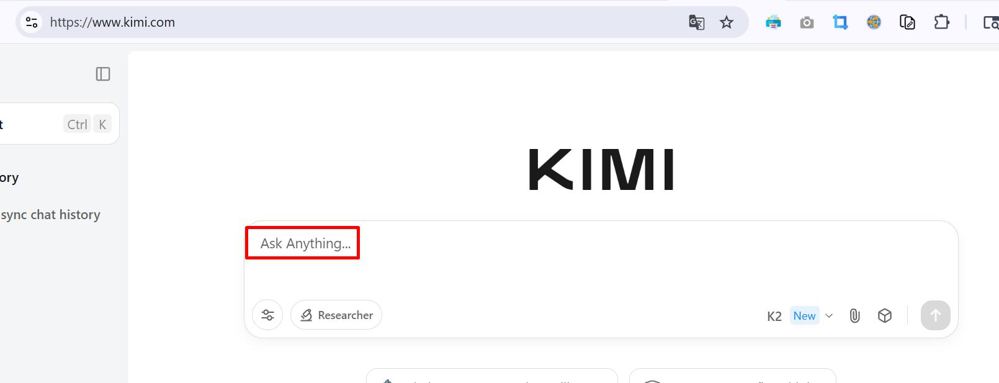
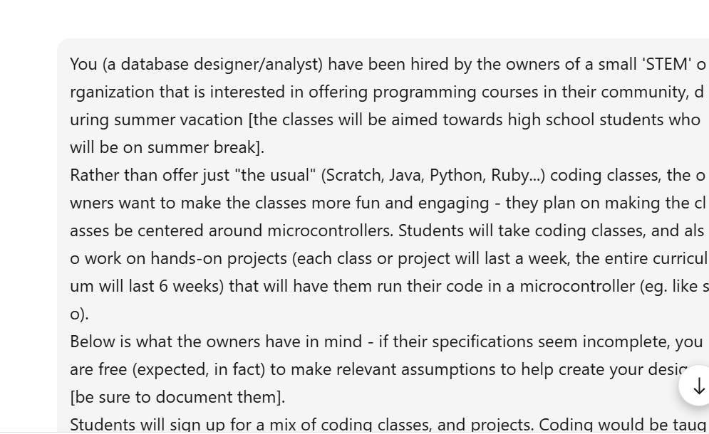
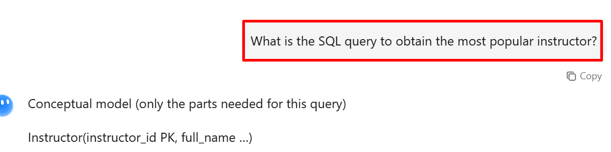

<!-- ********************************** -->
#### &nbsp;
#HW2: SQL generation via LLM :)
###Summary: you'll use Kimi K2 (a new, highly capable LLM!) to have natural language queries (ie. English questions) be turned into SQL code!
<div style="height:1px;border:1px solid #BBBBBB;"/>
###Go to https://www.kimi.com/chat/, and signing in using your Google credentials. Now you (and K2!) are ready to chat:
###
###Kimi K2 excels at code gen and multi-step follow-ups (eg when we ask for each new SQL query in a new prompt): https://blog.kilocode.ai/p/kimi-k2-first-open-model-to-challenge. Here's more on Kimi K2, from its creators [Moonshot AI]: https://moonshotai.github.io/Kimi-K2/
###Once you sign in, you can start having K2 output SQL, simply by 'chatting' with it, where you would provide:
####&bull; a plaintext description of the DB from HW1 :)
####&bull; followup prompts, one by one, for 5 questions - to have K2 output eqvt. SQL queries
###For this HW you'll simply submit screenshots. But in real life you'll be able to EXECUTE the queries so they run on your tables that have actual data. In other words, the AI makes it easy to 'simply' obtain SQL. During all the decades that SQL has been around, it's been HUMANS alone, who could come up with SQL (eg. look at link after link, to see what this <a href="https://www.google.com/search?q=Top+10+Data+Science+skills&rlz=1C1CHBF_enUS723US723&oq=Top+10+Data+Science+skills&gs_lcrp=EgZjaHJvbWUyBggAEEUYOdIBCDgyNTBqMGoxqAIAsAIB&sourceid=chrome&ie=UTF-8">search</a> shows!). But now, for the first time, AI can output SQL too.
###Start by copying and pasting from HW1 (!!), the verbatim DB description [ending with '(one to five stars).'], as your first 'prompt':
###
###Now that K2 has the DB description (from which it can create table schemas), you can continue the chat with it, by asking it to create SQL related to the tables, one question at a time - eg:
###
###Here's what we want to query - 5 items - input each separately (as its own prompt):
####&bull; what is the course with most number of students?
####&bull; who is the most popular instructor (ie. who teaches the most number of students)?
####&bull; who is the most popular instructor (ie. who has the highest rating)?
####&bull; create a listing that includes class name and the number of students enrolled in the class, sorted in reverse order of enrollment (eg. to tell which were the most popular classes, at the end of the term)
####&bull; given an instructor X, we want to know how much he/she got paid
###For each query, K2 outputs any assumptions made, then SQL code! Do feel free to create small tables (eg. at https://sql.js.org/examples/GUI/), then RUN the queries that K2 generated, to verify that they do work. You don't need to submit such verifications, you'd do this for your own edification :)
###After this course, do play with other systems that generate SQL, eg. https://github.com/vanna-ai [you can use this via Streamlit even, eg. see https://github.com/vanna-ai/vanna-streamlit-simple]. This explains how Vanna works: https://github.com/vanna-ai/vanna. You can also use Qwen 2.5 Coder 32B, Alibaba's model which has been trained using lots of SQL [eg. see pages 19,20 here: https://arxiv.org/pdf/2409.12186v1]. You can try deployments at https://huggingface.co/spaces?q=Qwen2.5-Coder-32B-Instruct, or even use Ollama to download and run it locally (you do need a beefy GPU!). TL;DR: <a href="https://www.google.com/search?q=LLM+Text-to-SQL&num=10&sca_esv=e948bafec9f39f8c&rlz=1C1CHBF_enUS723US723&sxsrf=AE3TifMDcRWcb2VSpI6p5JwogsknptOf5A%3A1753782576307&ei=MJmIaO_LEq3bkPIPqKqjsAk&ved=0ahUKEwjvo-Wb5eGOAxWtLUQIHSjVCJYQ4dUDCBA&uact=5&oq=LLM+Text-to-SQL&gs_lp=Egxnd3Mtd2l6LXNlcnAiD0xMTSBUZXh0LXRvLVNRTDIGEAAYBxgeMgYQABgHGB4yBhAAGAcYHjIGEAAYBxgeMgQQABgeMgQQABgeMgQQABgeMgQQABgeMgQQABgeMgQQABgeSIYgUNQKWPUXcAF4AZABAJgBtAGgAZsEqgEDMC40uAEDyAEA-AEBmAIFoALABMICChAAGLADGNYEGEfCAg0QLhiABBiwAxhDGIoFwgINEAAYgAQYsAMYQxiKBcICBxAjGLACGCeYAwCIBgGQBgqSBwMxLjSgB7sasgcDMC40uAexBMIHBTItNC4xyAcf&sclient=gws-wiz-serp">'Text-to-SQL'</a> is here to stay!
<div style="height:1px;border:1px solid #BBBBBB;"/>
###Please post your qns (and their answers!) on the 'hw2' Piazza page.
###**What to submit** (as a single .zip): for each query, a screenshot showing your prompt as well as the returned SQL.
###**HAVE FUN!**
<div style="height:1px;border:1px solid #BBBBBB;"/>
<div style="height:1px;border:1px solid #BBBBBB;"/>
<!-- ********************************** -->